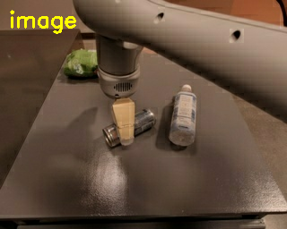
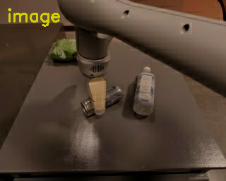
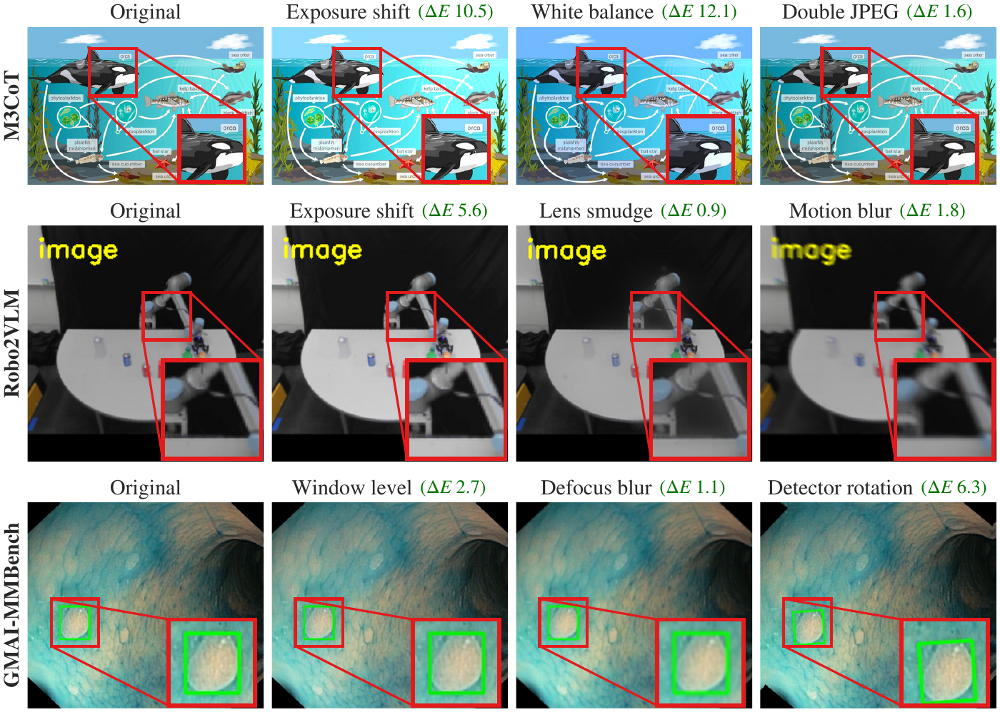

Choice (E) is not the next step.
Looks the Same, Answers Differently:
Flip-Direction Steering for Robust Vision-Language Reasoning
1Graduate School of AI, KAIST · 2NAVER Cloud · 3Department of Computer Science and Engineering, The Ohio State University · 4Department of Biomedical Informatics, The Ohio State University · 5Adobe Research · 6AITRICS
†Co-corresponding authors
The problem
Looks the same. Reasons differently.
Watch a near-equivalent token choice compound into different reasoning and a different final answer.
Same question
The robot has released the can and moved away with an open gripper.
What is its next action?


Same prefix
First token divergencesemantically similar
aanother
Choice (E) becomes a logical next step.
Reasoning divergesThe early wording remains plausible; the implied action no longer matches.
Answer flip
A
E
Approach the can with an open gripper.
Close the gripper to grasp the can.
Robo2VLM · Qwen3-VL-8B · Verified excerpts from the shared prefix through the final action.
How FlipDir works
Estimate flip directions. Steer uncertain steps.
Estimate a compact subspace offline, then use it only at low-margin decoding steps.
Offline preparation
Collect answer-flipping pairs.
Run original and subtly varied inputs through the frozen VLM, then retain pairs whose final predictions differ.
Frozen VLM
same model · same layer ℓ
Contrastive pairoriginal↔answer-flipping
Benchmark
VISFLIP benchmark
Recovery and preservation across three domains and nine subtle visual variations.

01
M3CoTScientific reasoning
02
Robo2VLMRobot scenes
03
GMAI-MMBenchMedical VQA
18 evaluated settings2 VLMs × 9 dataset–variation pairs
Results
Best recovery–preservation balance in all 18 settings.
H jointly measures clean and non-flip preservation with flip recovery. Each entry compares FlipDir with the strongest baseline for that model, dataset, and visual variation.
18 / 18settings with the highest H
+2.8average H improvement
≈1.08×base decoding FLOPs
Qwen3-VL-8B
mean +2.4 HSettingBaselineFlipDirΔH
M3CoT
Exposure77.878.3+0.5
White balance74.876.4+1.6
JPEG73.878.9+5.1
Robo2VLM
Exposure80.182.4+2.3
Lens smudge81.782.5+0.8
Motion blur79.382.4+3.1
GMAI-MMBench
Window level69.170.1+1.0
Defocus61.763.7+2.0
Rotation65.270.7+5.5
Gemma-3-12B
mean +3.2 HSettingBaselineFlipDirΔH
M3CoT
Exposure57.961.6+3.7
White balance59.360.8+1.5
JPEG60.463.0+2.6
Robo2VLM
Exposure72.773.4+0.7
Lens smudge69.973.6+3.7
Motion blur64.669.1+4.5
GMAI-MMBench
Window level66.670.0+3.4
Defocus64.670.9+6.3
Rotation62.264.2+2.0
Baseline values are the strongest H among VTI, VCD, and LEAD in each setting.
CITATION
@article{jung2026flipdir,
title={Looks the Same, Answers Differently: Flip-Direction Steering for Robust Vision-Language Reasoning},
author={Yeonsung Jung and Joonhyun Jeong and Hoang Pham and Joowon Kim and Yoonsik Park and Viet Dac Lai and Eunho Yang},
journal={arXiv preprint arXiv:2609.28851},
year={2026}
}